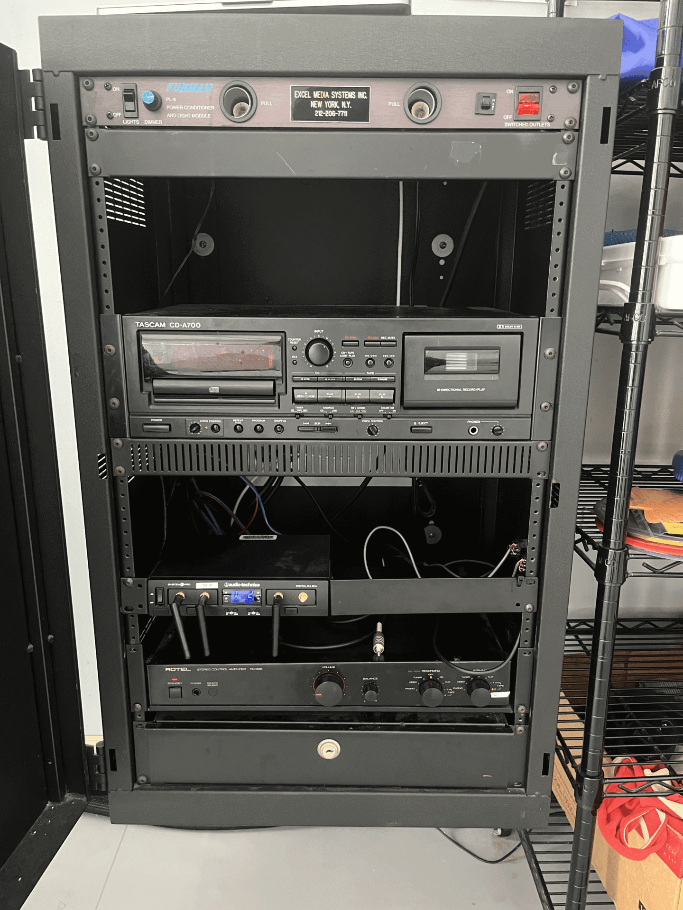

Room 304
Sound Setup

- Make sure you turn on the speakers from the switch on the wall panel
- Turn on the power switch on the Furman Box present in the rack in the room
- On the "Rotel" box at the very bottom of the rack, make sure the knob under the "Listening" section is turn on "Cart SSL". Make sure the volume knob on the same box is switched to 9 'o' clock position
- On the back on the cart with the room PC, there is small "SSL box". Make sure the "Monitor Mix" knob is turned all the way to the right. Also turn down the big blue knob Monitor Level knob to 9 'o' clock position.
- On the room PC, go to the toolbar in the top right corner and under Sound Settings, select SSL 2+ (It would be highlighted blue when selected (In case the SSL 2+ doesn't show up in the output settings, replug the USB-C cable on the box.
- You should be able to play the room PC audio through the speakers. Adjust the monitor level only on the big blue knob situated on the SSL 2+ based on your preferences.
For Macbook
- Connect your laptop to the HDMI cable in the room
- You can only play audio from your personal computer through the TV in the room. Use the remote on the cart to turn the TV on.
- Make sure to select ESO-C1 as the sound output on your output
- When the TV is turned on, you should automatically see your laptop being projected onto it. In case it's not, click Input on the TV remote and ensure HDMI 1 is selected.
- In order to change display settings, open system preferences (in the dock at the bottom of the screen), click on displays, then select the arrangement tab.
- If you would like to mirror the displays (such that the screen on the cart and on the wall are the same) make sure the box is checked. If you would like to extend the displays (such that the two screens are separate), make sure the box is unchecked. The blue box with the white tab on the top represents the computer monitor while the other box represents the room's screen. You can move around this second box to determine where the second screen exists in relation to the computer monitor. Eg: if set to be on the left of the blue box with the white bar, you would be able to move your mouse all the way to left of your monitor and onto the screen at the front of the room.
- When done, use the remote to turn off the TV
- Turn the red switch "off" on the Furman box in the rack.
For Windows
- First ensure SAMSUNG is selected as the playback device in the sound settings (bottom left corner of the toolbar
- Click the Windows icon on the bottom left corner, open 'Settings' and Click on 'System'
- Click on 'Display' and scroll down to 'Multiple Displays' setting.
- If you would like to mirror the displays (such that the screen on the podium and on the wall are the same) make sure to select 'Duplicate these displays'
- If you would like to extend the displays (such that the two screens are separate), select 'Extend these displays' You can adjust how both screens related to each other in the 'Rearrange your displays' section when scrool back to the top of the page.
Projector Setup

- Turn on the TV using the remote in the room.
- By default, the room PC should be projected on the monitor. In case it isn't, press Input on the remote and ensure HDMI 2 is selected.
- On the computer, open system preferences (in the dock at the bottom of the screen), click on displays, then select the arrangement tab.
- If you would like to mirror the displays (such that the screen on the cart and on the wall are the same) make sure the box is checked. If you would like to extend the displays (such that the two screens are separate), make sure the box is unchecked. The blue box with the white tab on the top represents the computer monitor while the other box represents the room's screen. You can move around this second box to determine where the second screen exists in relation to the computer monitor. Eg: if set to be on the left of the blue box with the white bar, you would be able to move your mouse all the way to left of your monitor and onto the screen at the front of the room.
- When done, use the remote to turn off the projector.
- Turn the red switch "off" on the Furman box in the rack.

- Connect your laptop to the HDMI cable provided at the podium.
- Locate the Extron panel on the wall near the computer.
- Press the "Laptop" button to select your laptop as the video source.
- The projector should turn on automatically and display your laptop's screen.
- If the projector doesn't turn on, press the "Power" button on the Extron panel.